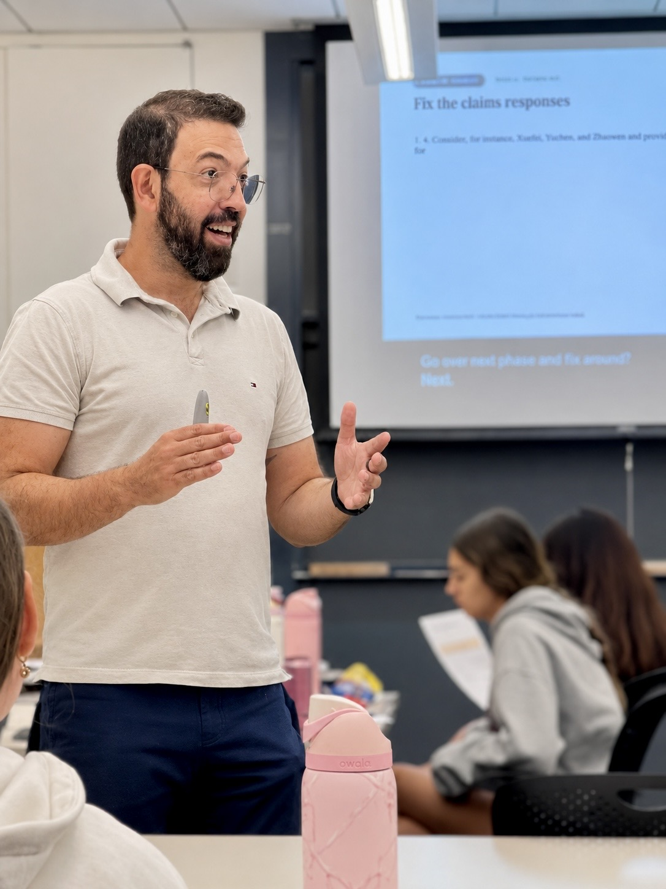

The Path
From a music conservatory in Arapongas to doctoral research in Fribourg and Harvard Medical School training — an unusually wide arc, on purpose.

Education
-
2023–2026
ALM, Extension Studies (Dramatic Arts)
Harvard University · Cambridge, USA
-
2017–2020
PhD, Psychology
University of Fribourg · Fribourg, Switzerland
-
2014–2016
MS, Behavior Analysis
Universidade Estadual de Londrina · Londrina, Brazil
-
2012–2016
BS, Psychology
Faculdade Pitágoras de Londrina · Londrina, Brazil
-
2007–2010
BA, Theology
Faculdade Teológica Sul Americana · Londrina, Brazil
-
2002
Music Theory & Keyboard
Conservatório Musical Carlos Gomes · Arapongas, Brazil
Research & Clinical Training
-
2024–2025
Psychology Fellow, Clinical Psychology Postdoctoral
Cambridge Health Alliance / Harvard Medical School
-
2019–2021
Visiting Research Fellow, Clinical Psychology Pre- & postdoctoral
McLean Hospital / Harvard Medical School